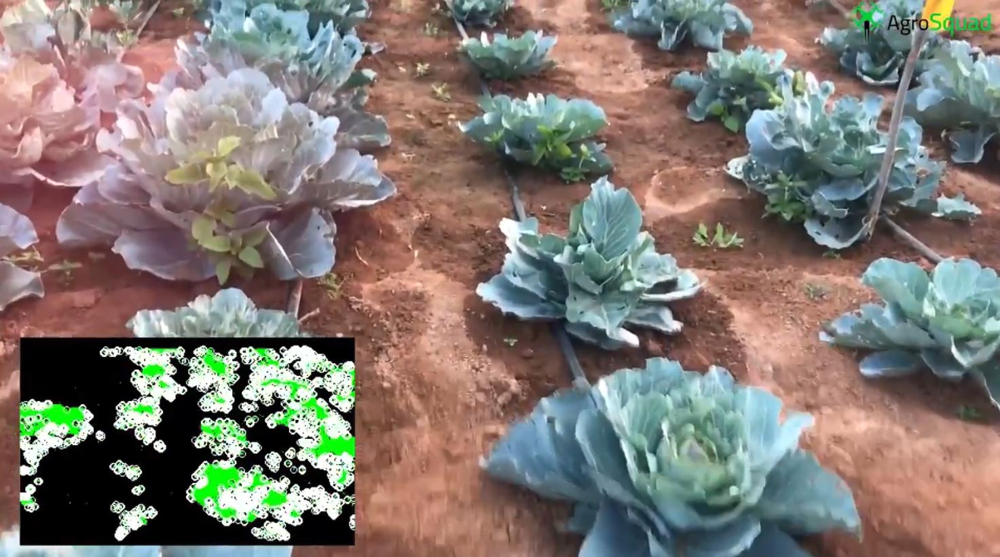
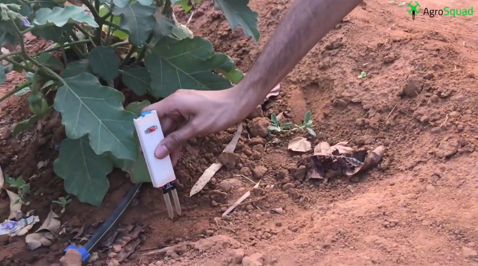

In the conventional farming heuristics, the amount of water and fertilizers applied to the field for irrigation and soil enhancement is unmeasured and estimated by the farmer. Thereby the amount of water, fertilizer, pesticides and other farming based ingredients applied on the land is either less or surplus as per the required/recommended amount. To sustain crop health and maintain the quality of product with optimum use of farming ingredients, a strict schedule has to be followed by the farm manager. Apart from other farming routine measures, proper timing of irrigation water applications, pest control and fertilizer/manure use is a crucial decision for a farm manager to meet the water needs of the crop to prevent yield loss due to water stress, maximize the irrigation water use efficiency resulting in beneficial use and conservation of the local water resources, minimize the leaching potential of nitrates and certain pesticides that may impact the quality of the groundwater, regulate timing and frequency of water as well as soil enhancement and maintenance application, have an intricate overlook of individualized sections of crop field, for quality check, accurately measure important soil parameters, Infestation and intrusion control. It is difficult to abide with the factors and measurements without human error.
Ergo, undertaking an approach which makes use of advanced automation heuristics for farming and agricultural maintenance would not just ensure the quality of crop production but also regulate the amount of natural or synthetic materials used to enhance and sustain soil as well as crop health. Thus, automating these farming heuristics will not only reduce error in monitoring and ingredient application but also improve crop yield, hence ideal for both organic and chemical farming. As Organic farming industry is booming at exponential rates, the need for nutrient rich organic products will shoot rapidly.
The 3 subsystems are:
THE CENTRAL PROCESSING UNIT - Takes control of the 2 other sub-systems. The central processing unit takes control over the cylindrical soil monitoring probe measuring all the necessary soil parameters, and the UAV subsystem that gathers the top-view sectional image data of the field. This may come as a standalone unit or as a USB peripheral that can be plugged into a laptop/desktop pc, for the end-user. The standalone unit or the USB peripheral further communicates with the 2 autonomous subsystems through a Wi-Fi based network for final extrapolation and analysis of the collected data. The device is setup and controller by the farm manager to overlook and control the entire automation system.
QUADCOPTER - Crop top-view sectional analysis (image processing) and other atmospheric parameters of the field. Seeing a crop from the air can reveal patterns that expose everything from irrigation problems to soil variation and even pest and fungal infestations that aren’t apparent at eye level. The quadcopter rests on a platform enabled with wireless charging, and can take off for field inspection at fixated intervals without human intervention.
PROBE CAPSULE - The soil monitoring probe is an advanced cylindrical shaped soil submerged device, comprising of soil hydrometer, temperature sensor, acoustic model based intrusion and infestation detection, light sensor and data logger for important soil parameters. The data is logged and transmitted to the central processing unit for further extrapolation and implementation. The probe can be commercialized as a standalone device for small scale agricultural purposes. The probe capsule along with autonomous ground and aerial drones, automate basic and conventional farm heuristics to a labor-free level till the point of harvesting, regarding which the user is notified, also making the entire process of agricultural maintenance and management effective.

2 comments
Really innovative! Great job Shashank :)
ReplyThanks Vishwas!
ReplyThis is the future of agriculture! Excellent work Shashank
ReplyThankyou Sonu!
Reply